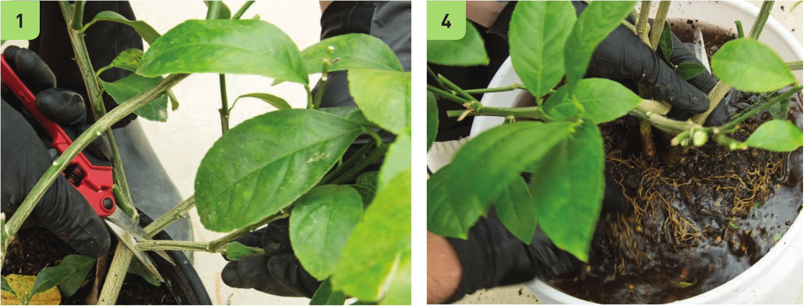

TRANSPLANTING PLANTS STARTED IN SOIL The option of using a soil-started plant in a hydroponic garden is often very attractive to new hydroponic gardeners because it makes it possible to purchase plants from a garden center or use plants from their existing soil garden. It is definitely possible to transplant soil-started plants into a hydroponic system, but it is not the best way to source plants for a hydroponic garden. The process of rinsing off the soil from a plant's roots usually involves some root loss and damage, which increases the potential of exposure to root diseases. If the hydroponic garden uses small irrigation lines (V4 inch or smaller), it is possible that any soil particles not rinsed off from the transplant may clog the irrigation lines. I would not recommend transplanting a soil plant into a hydroponic system if you are not okay with the possibility that the plant may not survive the process. Now that the disclaimers are out of the way, I must personally say that I really enjoy the process of washing off the soil from a plant's roots. 1 If possible, prune off all the fruit and some of the vegetation from the plant. Less fruit and vegetation means less need for water uptake and less demand on the root system. It is important to reduce the demand on the root system because it might be damaged in the rinsing process and unable to deliver the water and nutrients required for the full-size plant. 2 Pour off any loose soil from the top of the transplant. 3 Remove the plant from its pot. 4 Gently dunk the root system into a bucket of water. TOOLS Sharp pruners Bucket 148 DIY HYDROPONIC GARDENS
